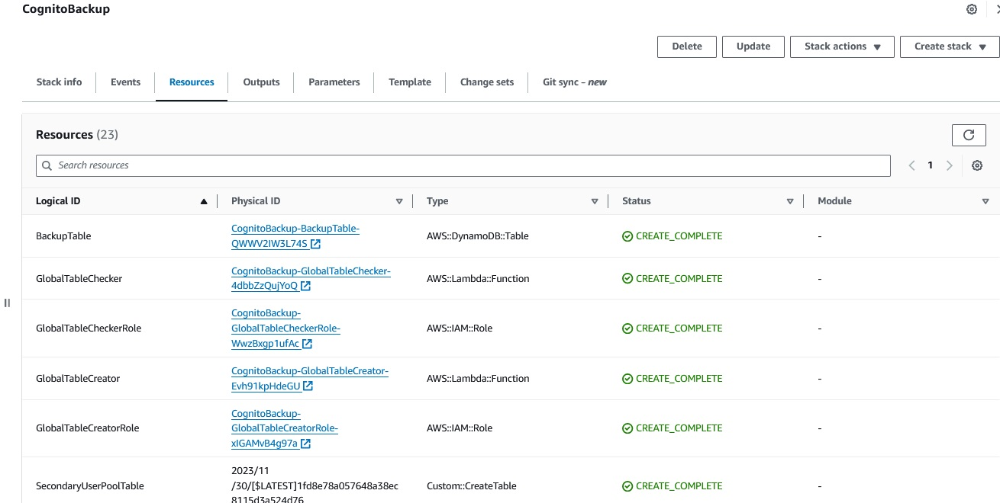
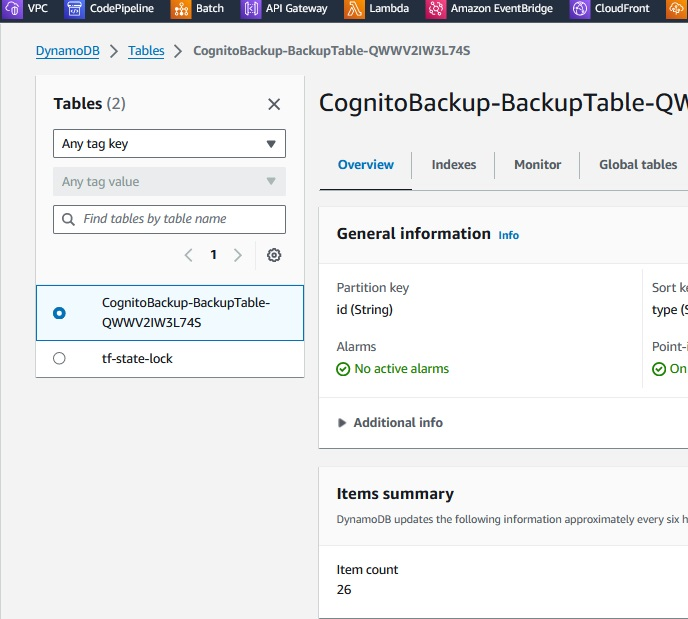
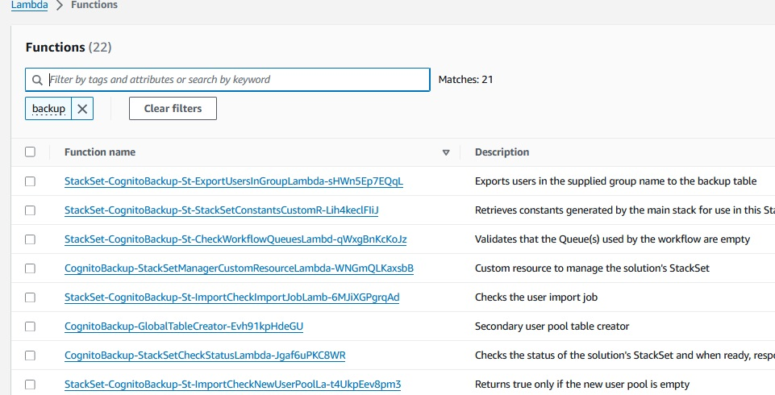
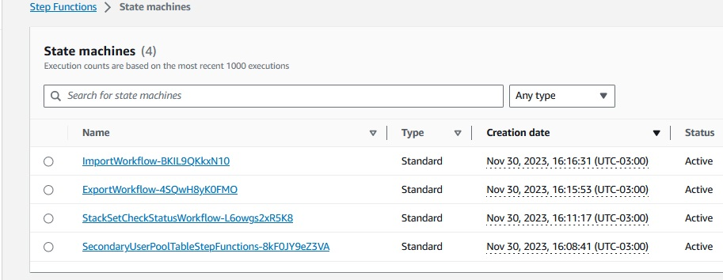

SCC
Brasil
os cloud gurus
Software Cloud Consulting
Your software development, cloud, consulting & shoring company
Cognito Backup - How to backup Cognito

By Wolfgang Unger
Introduction
AWS got some aweseome services, unfortunatelly Cognito is for sure not one of them
Even internal AWS architects recommened sometimes to use instead for example Keycloak or Auth0.
Some consider Cognito even the worst AWS Service.
I would say, not the worst, but maybe the second worst :-D
But, what if you are using it and not replacing it in the next month, are you making backups
for Cognito ?
You should! You may have a couple of users in the pool, what if you would have a problem in your
account or Cognito and have to restore them?
Cognito unfortunatelly does not provide an internal or native Backup functionality like for example RDS or EBS etc
Cognito Backup
If you are looking for a available Backup Solution and don't want to implement this own you own,
you will notice, there is not really a perfect solution to find.
You may also find these 2 options in your research:
But you would have to implement the code to backup and restore on your own in an lambda for example.
If you are looking for something without implementing the functionality on your own, you might want
to use this solution from AWS.
I wouldn't consider it a perfect solution, it deploys a bunch of resources, multiple Lambdas, Step Functions workflows and more and
is also quite complicated to understand and to debug in the case of a problem, but so far there is no better solution to find.
Let's have a closer look how it works.
AWS Cognito Backup Workflow
You have to deploy the CloudFormation Template in the account where to backup your Cognito User pool
Cognito Backup Workflow template
You have to enter these Parameters:
CognitoTPS (default 10)
ExportFrequency (default EVERY_DAY)
NotificationEmail
PrimaryUserPoolId
SecondaryRegion
SnsPreference (default INFO_AND_ERRORS)
It will deploy the resources and a 2nd Template in your CloudFormation Console.

The deployment will take a while, which indicates there is a lot going on there, but when done,
let's check the most important resources to understand the basic functionality.
Global Dynamo Table to backup the data in the pool
This dynamo table ( with a replica in a 2nd region, see Parameters for which region) will contain the data in your user pool .
An important note on this:
Please verify you have defined the user_name in your Cognito users. It can be the email address, it can be a name - if unique- but
it must be set. If not, Cognito will generate a UID, but this will not be supported in the case of a restore.
If you restore your Dynamo data, the new Cognito Pool will again create a new UID and you will no longer be able to identify your users based on user_name.
One more limitation ( already mentioned in the AWS documentation for this solution ):
"Customers interested in using this solution should be aware that it does not export sensitive information, such as user passwords;
that user pools with multi-factor authentication (MFA) enabled are not supported"
Lambda Functions
The solution will also deploy a bunch of Lambda functions in your account, take a look:
I am asking myself, if it was really neccessary to deploy this amount of functions, but that's how it is.
Take a look in the functions, if you want details on the implementation.
Step Functions Workflows
Finally to mention, the Step Functions Workflows, 4 of them in total.
The Export Workflow will be triggered based on the Parameter ExportFrequency in the CloudFormation Template.
You should see the execution counter increasing daily after the deployment.
The Import Workflow you must trigger manually in case you want to restore the data.
Restore
To restore the data of a backup you must trigger the Import Workflow as mentioned.
You can do so, once the Export Workflow ran successfully at least once.
What about to transfer data from one to another account?
For this use-case you have to install the solution in both accounts.
Once you have data in the Dynamo in the source account, you have to copy the data in the table to
the Dynamo in the new account. You can do so by Commandline or Python.
Now you can run the Import Workflow in the target account.
Conclusion
This solution works - under the already mentioned limitations - and you don't have to implement
the functionality on your own in a couple of lambdas.
But it is far away from the standard of Backups solutons we are used to on AWS like for RDS, EBS or S3.
Hopefully AWS comes up in the future with a easier way to backup Cognito.
Or even with a better solution at all
Autor

Wolfgang Unger
AWS Architect & Developer
6 x AWS Certified
1 x Azure Certified
A Cloud Guru Instructor
Certified Oracle JEE Architect
Certified Scrum Master
Certified Java Programmer
Passionate surfer & guitar player